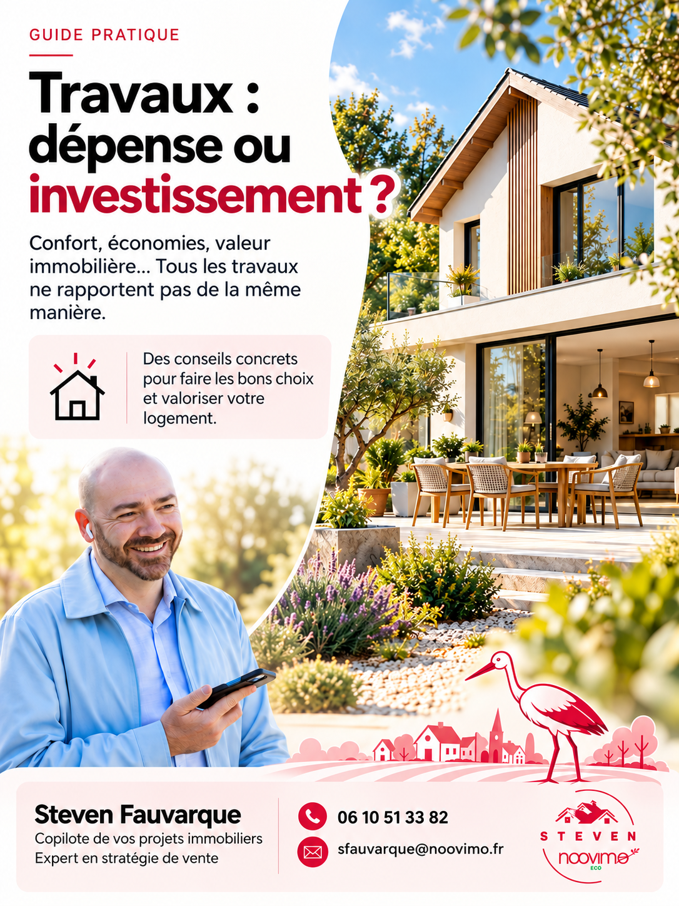

Les guides pratiques du Petit Sillon
Des dossiers pour mieux comprendre votre logement, votre patrimoine et les décisions du quotidien. Consultez les thèmes et demandez gratuitement les guides qui vous intéressent.

Travaux : dépense ou investissement ?
Confort, économies, valeur immobilière… Tous les travaux ne rapportent pas de la même manière.
Un dossier pratique de 10 pages pour faire les bons choix dans votre logement, que vous envisagiez de vendre ou non.
Recevoir ce guide gratuitementVotre prénom, votre nom et votre adresse e-mail sont demandés lors d'une première demande.
Vous avez déjà demandé un guide ?
Retrouvez d'abord le message reçu par e-mail lors de votre précédente demande : il contient le lien vers votre guide. Les prochains dossiers seront ajoutés ici au fil des numéros.
Nous préparons un accès simplifié aux autres guides pour les lecteurs déjà inscrits. Pour l'instant, cette page ne reconnaît pas automatiquement votre adresse e-mail.
Les guides sont envoyés dans le cadre de votre demande. L'inscription aux prochaines communications est distincte et facultative.